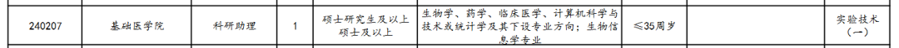
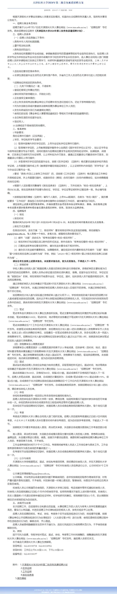

科研助理岗位招聘
原文：https://mp.weixin.qq.com/s?__biz=MzAwMzIzOTk5OQ==&mid=2247520034&idx=1&sn=89372f0a101147fab9e76fa48bd97a17&chksm=9b3cf672ac4b7f64763e4e0e544f599cdcaaab6e536d5b9f399855b7c47d612dd4f548ab9102#rd 合集：求职/求学/招聘
现有以下岗位招聘：

今天就是报名的最后一天了，感兴趣的同学可抓紧时间访问原文报名：http://www.tmu.edu.cn/rsc/2024/0717/c2711a73677/page.htm


天津医科大学（Tianjin Medical University），简称“TMU”，为天津市人民政府、国家卫生健康委员会和教育部共建高校，是国家“世界一流学科建设高校”、国家“211工程”重点建设院校，入选国家“2011计划”牵头高校、国家建设高水平大学公派研究生项目、第一批临床医学硕士专业学位研究生培养模式改革试点高校、教育部来华留学示范基地建设高校、中国政府奖学金来华留学生接收院校、卓越医生教育培养计划试点高校、国家级新工科研究与实践项目，国家最早批准试办八年制的2所医学院校之一，首批试办七年制的15所医学院校之一，为北京卓越医学人才培养高校联盟成员单位。
** **
合作导师介绍：
蔡志刚 博士
天津医科大学教授、博导、PI
个人介绍 ：
天津医科大学卓越人才计划特聘教授， 兼职天津医科大学天津总医院血液内科以及风湿免疫科合作PI, 血液与健康全国重点实验室（2023年新成立）白血病方向骨干PI。2001年于云南大学生物系获得学士学位。2006年于中国科学院上海生命科学研究院获得博士学位。2007年和2013年分别在印第安纳大学医学院医学与分子遗传系，以及眼科系，担任博士后和助理研究员，20015年获得NIH-T32资助在印第安纳大学医学院微生物与免疫学系从事克隆性造血与血液肿瘤研究，2019年起担任印第安纳大学医学院儿科系研究助理教授。2020年12月受聘于天津医科大学基础医学院药理学系。担任Frontiers in Physiology编辑，并参与包括PNAS杂志在内多种专业杂特邀评审，以及捷克和新加坡等国家自然科学基金评审。受邀参与中国科技出版社《肿瘤靶向治疗与免疫治疗的研究进展》的编写（负责血液肿瘤章节）并获国家自然科学基金资助。
研究方向及蔡志刚课题组介绍 ：
“ 克隆性造血 ” (Clonal Hematopoiesis ， CH) 是 指 发 生 在 造 血 干 细 胞（Hematopoietic Stem Cell，HSC）水平上的基因突变所造成的造血异常现象。多项研究表明“克隆性造血”是血液肿瘤和心血管疾病等慢性病共同的早期事件和风险因子。随着基因组次代测序技术的成熟和普及，在临床上时序化、定量化地追踪“克隆性造血”也正成为可能。然而，关于驱动“克隆性造血”的遗传和环境因素的研究在国际上才刚刚起步，仍有大量未知领域亟待解决，阻碍了将“克隆性造血”用于临床疾病的诊断和防控。本课题组与血液检验等临床观察紧密结合，利用动物疾病模型，从分子生物学、细胞生物学和药物开发与应用，以及单细胞多组学数据挖掘等角度，对正常的造血干细胞以及癌症干细胞的生物活性进行探讨，并深入研究“克隆性造血”如何向髓系血液肿瘤（如，骨髓增殖性肿瘤MPN、骨髓增生异常综合症MDS和急性髓系白血病AML）和其它衰老相关的慢性疾病进行演化。我们前期研究成果分别发表在国际著名学术期刊Annals of the Rheumatic Diseases (2023), Genes & Diseases (2023), Discover Oncology (2022), Journal of Clinical Investigation (2021)，Blood Advances (2020)，Cell Reports (2020)以及Cell Stem Cell (2018)。课题组所获研究成果将有益于血液与自身免疫等相关疾病的防治与诊疗。
工作经历:
2020- 今 天津医科大学药理学系教授
2019-2020 美国印第安纳大学医学院儿科学系，研究助理教授
2015-2019 美国印第安纳大学医学院微生物学与免疫学系，NIH- T32资助研究员
2013-2015 美国印第安纳大学医学院眼科学系，研究助理
2007-2012 美国印第安纳大学医学院医学与分子遗传学系，博士后
近期研究成果：
2023年：
1. Single-cell transcriptome analysis profiles cellular and molecular alterations in submandibular gland and blood in IgG4-related disease. Annals of the Rheumatic Diseases. 2023, In Press （通讯作者）
2. Single-cell RNA sequencing reveals abnormal transcriptome signature of erythroid progenitors in pure red cell aplasia. Genes & Diseases. 2023-04. （通讯作者）
3. Cooperative progression of colitis and leukemia modulated by clonal hematopoiesis via PTX3/IL-1β pro-inflammatory signaling. (accepted)（通讯作者）
2022年：
1. Prioritizing risk genes as novel stratification biomarkers for acute monocytic leukemia by integrative analysis. Discover Oncology. 2022-06. （通讯作者）
2021年之前
1. Cai, Z.; Nelanuthala, S.; Lu, X.; Aguilera, F.; Hadley, A.; Ramdas, B.; Kotzin, J.J.; Fang, F.; Nephew, K.; Zhang, C.; Jenao-Mejia, J.; Kapur, R. Hyperglycemia cooperates with Tet2 heterozygosity to induce leukemia driven by pro-inflammatory cytokine induced lncRNA Morrbid. Journal of Clinical Investigation. 2021 Jan 4;131(1):e140707.
2. Cai, Z.*; Zhang, C.; Kotzin, J.J.; Williams, A.; Henao-Mejia, J.; Kapur, R. Role of lncRNA Morrbid in PTPN11 (Shp2)E76K Driven Juvenile Myelomonocytic Leukemia. Blood Advances. 2020 Jul 28; 4(14): 3246–3251.
3. Cai, Z.; Aguilera, F.; Ramdas, B.; Daulatabad, S.V.; Kotzin, J.J.; Carroll, M.; Wertherim, G.; Williams, A.; Janga, S. C.; Zhang, C.; Jenao-Mejia, J.; Kapur, R. Targeting Bim via a LncRNA Morrbid regulates the survival of preleukemic and leukemic cells. Cell Reports. 2020 Jun 23;31(12):107816. doi: 10.1016/j.celrep.2020.107816.
4. Cai, Z.; Kotzin, J. J.; Ramdas, B.; Chen, S.; Nelanuthala, S; Palam, L.R.; Pandey, R.; Mali, R.S.; Liu, Y.; Kelley, M.R.; Sandusky, G.; Mohseni, M.; Williams, A.; Henao-Mejia, J.; Kapur, R. Inhibition of inflammatory signaling in Tet2 mutant preleukemic cells mitigates stress-induced abnormalities and clonal hematopoiesis. Cell Stem Cell, 2018, 23(6): 833-49
5. Ramdas, B.*, Mali, R.S., Palam, L.R., Pandey, R., Cai, Z., Pasupuleti, S.K., Burns, S.S. and Kapur, R., Driver Mutations in Leukemia Promote Disease Pathogenesis through a Combination of Cell Autonomous and Niche Modulation. Stem Cell Report. 2020.
6. Chen, S.; Wang, Q.; Yu, H.; Capitano, M.; Vemula, S.; Nabinger, S.; Gao, R.; Yao, C.; Kobayashi, M.; Geng, Z.; Fahey, A.; Henley, D; Liu, S.; Barajas, S.; Cai, W.; Wolf, E.; Ramdas, B.; Cai, Z ; Gao, H.; Luo, N.; Sun, Y.; Wong, T.; Link, D.; Liu, Y.; Boswell, H.; Mayo, L.; Huang, G.; Kapur, R.; Yoder, M.; Broxmeyer, H.; Gao, Z.; Liu, Y. Mutant p53 drives clonal hematopoiesis through modulating epigenetic pathway. Nature Communications, 2019, 10(1): 1-14
7. Cai, Z. ; Grobe K.; Zhang, X.* Role of heparan sulfate proteoglycans in optic disc and stalk morphogenesis. Developmental Dynamics , 2014, 243(10): 1310-6
8. Cai, Z.; Tao, C.; Ladher, R.; Gotoh, H.; Feng, G.S.; Wang, F.; Zhang, Z.* Deficient FGF signaling causes optic nerve dysgenesis and ocular coloboma. Development , 2013, 140(13): 2711-23
9. Cai, Z ; Simons, DL; Fu, X-Y; Feng, G-S; Wu, SM; Zhang, X* Loss of Shp2-mediated Mitogen-Activated Protein Kinase Signaling in Muller Glial Cells Results in Retinal Degeneration. Molecular Cellular Biology , 2011, 26(6): 2973-83
10. Cai, Z. ; Feng, G.S.; Zhang, X.* Temporal Requirement of the Protein TyrosinePhosphatase Shp2 in Establishing the Neuronal Fatein Early Retinal Development. Journal of Neuroscience. Journal of Neuroscience, 2010, 30(11): 4110-9
11. Li, H.; Tao, C.; Cai, Z.; Hertzler-Schaefer, K.; Collins, T.N.; Wang, F.; Feng, G.S.; Gotoh, N.; Zhang, X.* Frs2α and Shp2 signal independently of Gab to mediate FGF signaling in lens development. Journal of Cell Science , 2014, 127(3): 571-82
12. Carbe, C.; Garg, A.; Cai, Z. ; Li, H.; Powers, A.; Zhang, X. An allelic series at the paired box gene 6 (Pax6) locus reveals the functional specificity of Pax genes. Journal of Biological Chemistry. , 2013, 288(17): 12130-41
目前承担科研课题情况
项目名称：TET2突变协同代谢紊乱等环境因素促进白血病发生的分子机制研究 项目来源：国家自然科学基金项目本人排名：课题负责人项目名称：免疫应答相关lncRNA Morrbid的功能和分子调控网络本人可支配经费（万）：55项目起止时间：2024-01;2027-12
项目来源：国家自然科学基金项目本人排名：课题负责人项目名称：TET2突变协同代谢紊乱等环境因素促进白血病发生的分子机制研究本人可支配经费（万）：55项目起止时间：2022-01;2025-12 项目名称：卓越人才引进计划 项目来源：校级重大项目本人排名：课题负责人本人可支配经费（万）：300项目起止时间：2020-07;2025-06
博士后招聘
课题组长期招聘博士后，待遇主要参考我校基本政策：（一）薪酬待遇1.薪资标准：25万元/年（税前）。2.保险与福利:在站期间享受与本校职工同等的社会保险、公积金及其他福利待遇。3.科研奖励：在站期间获得国家级项目或发表高水平科研论文，按本校科研奖惩相关规定予以奖励。4.在站期间入选国家博士后创新人才支持计划，可获得博士后经费两年63万元，其中生活经费40万元（两年），科研经费20万元和国际交流经费3万元的资助；获批中国博士后科学基金面上资助、特别资助等项目，可获得科研经费8-18万元的资助。5.按照天津市相关政策，对入站博士后（非在职）给予资助。（二）科研经费博士后在站期间，学校提供科研启动经费10万以上。给予院级课题政策倾斜。（三）职称晋升博士后职称申报按国家和天津市相关政策执行。（四）住房学校为在站博士后解决住宿。（五）出站聘用博士后出站后，其学术水平达到学校公开招聘或高层次人才引进条件的，可优先参加学校公开招聘或申请高层次人才引进项目。
研究方向 :克隆性造血，免疫调控和血液肿瘤。
联系方式：US36zcai@tmu.edu.cn